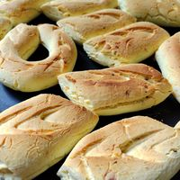

Ingredientes
- 5 huevos
- 200 g grasa de cerdo o aceite
- Sal (A gusto)
- Anís (A gusto)
- 1 kg almidón de mandioca
- 100 ml leche
- 400 g queso
Preparación
- En un bol batimos los huevos con la grasa durante 2 minutos
- Agregar la sal y el anís
- Amasar hasta integrar todo muy bien y dejar reposar por 30 minutos
- Precalentar el horno 250 grados y hornear de 20 a 25 minutos
